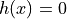
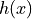
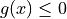

lava.lib.optimization.problems
lava.lib.optimization.problems.coefficients
- class lava.lib.optimization.problems.coefficients.CoefficientTensorsMixin(*coefficients: Union[List, numpy.typing._array_like._SupportsArray[numpy.dtype], numpy.typing._nested_sequence._NestedSequence[numpy.typing._array_like._SupportsArray[numpy.dtype]], bool, int, float, complex, str, bytes, numpy.typing._nested_sequence._NestedSequence[Union[bool, int, float, complex, str, bytes]]])
Bases:
object- property coefficients
- get_coefficient(order: int)
- property max_degree
Maximum order among the coefficients’ ranks.
lava.lib.optimization.problems.constraints
- class lava.lib.optimization.problems.constraints.ArithmeticConstraints(eq: Optional[Union[List, numpy.typing._array_like._SupportsArray[numpy.dtype], numpy.typing._nested_sequence._NestedSequence[numpy.typing._array_like._SupportsArray[numpy.dtype]], bool, int, float, complex, str, bytes, numpy.typing._nested_sequence._NestedSequence[Union[bool, int, float, complex, str, bytes]]]] = None, ineq: Optional[Union[List, numpy.typing._array_like._SupportsArray[numpy.dtype], numpy.typing._nested_sequence._NestedSequence[numpy.typing._array_like._SupportsArray[numpy.dtype]], bool, int, float, complex, str, bytes, numpy.typing._nested_sequence._NestedSequence[Union[bool, int, float, complex, str, bytes]]]] = None)
Bases:
object- property equality
EqualityConstraints object defined by tensor coefficients.
- property inequality
InequalityConstraints object defined by tensor coefficients.
- class lava.lib.optimization.problems.constraints.Constraints
Bases:
objectA set of constraints, including both discrete and arithmetic.
Discrete constraints can be of any arity and are defined by a tuple containing variable subsets and a relation tensor. Arithmetic constraints include equality and inequality constraints and are defined by a series of tensors defining the coefficients of scalar function of the variable vectors.
- property arithmetic
Constraints defined via an arithmetic relation.
- property discrete
Constraints over discrete variables only, defined via a relation.
- class lava.lib.optimization.problems.constraints.DiscreteConstraints(constraints: List[Tuple[int, int, Union[numpy.typing._array_like._SupportsArray[numpy.dtype], numpy.typing._nested_sequence._NestedSequence[numpy.typing._array_like._SupportsArray[numpy.dtype]], bool, int, float, complex, str, bytes, numpy.typing._nested_sequence._NestedSequence[Union[bool, int, float, complex, str, bytes]]]]])
Bases:
objectSet of constraints involving only discrete variables.
- Parameters
constraints (List of constraints each as an n-tuple where the) –
the (first n-1 elements are the variables related by the n-th element of) –
variables (tuple. The n-th element is a tensor indicating what values of the) –
allowed. (are simultaneously) –
variables) (Although initially intended for tensors of rank=2 (binary) –
:param : :param other ranks simply mean relations between any number of variables and: :param thus are allowed. In this way: :param tensor’s rank corresponds to the Arity of the: :param constraint they define.:
- property constraints
User specified constraints.
- get_scope_and_relations(constraints)
Extract relations and variable subsets from constraints.
- Parameters
constraints (List of constraints each as an n-tuple where the first) –
the (n-1 elements are the variables related by the n-th element of) –
details. (tuple (a tensor). See class docstring for more) –
- property relations
List of tensors specifying discrete constraint over var subsets.
- set_relations_var_subsets(constraints)
Set relations and variable subsets from constraints.
- Parameters
constraints (List of constraints each as an n-tuple where the first) –
the (n-1 elements are the variables related by the n-th element of) –
details. (tuple (a tensor). See class docstring for more) –
- validate_subsets_and_relations_match(subsets, relations)
Verify relation size match domain sizes of affected variables.
- Parameters
subsets (List of variable subsets affected by the corresponding) –
relation. –
relations (List of tensors specifying discrete constraint over var) –
subsets. –
- property var_subsets
List of variable subsets affected by the corresponding relation.
- class lava.lib.optimization.problems.constraints.EqualityConstraints(*coefficients: Union[List, numpy.typing._array_like._SupportsArray[numpy.dtype], numpy.typing._nested_sequence._NestedSequence[numpy.typing._array_like._SupportsArray[numpy.dtype]], bool, int, float, complex, str, bytes, numpy.typing._nested_sequence._NestedSequence[Union[bool, int, float, complex, str, bytes]]])
Bases:
lava.lib.optimization.problems.coefficients.CoefficientTensorsMixinList of equality constraints defined by tensor coefficients.
We consider generalized constraints of arbitrary degree:

where the terms of  have the form: .. math:
g(x)= \sum_{ijk...} \epsilon_{ijk...} \cdot x_i \cdot x_j \cdot x_k \cdot ...
- Parameters
coefficients (tensor coefficients defining the constraints.) –
- class lava.lib.optimization.problems.constraints.InequalityConstraints(*coefficients: Union[List, numpy.typing._array_like._SupportsArray[numpy.dtype], numpy.typing._nested_sequence._NestedSequence[numpy.typing._array_like._SupportsArray[numpy.dtype]], bool, int, float, complex, str, bytes, numpy.typing._nested_sequence._NestedSequence[Union[bool, int, float, complex, str, bytes]]])
Bases:
lava.lib.optimization.problems.coefficients.CoefficientTensorsMixinList of inequality constraints defined by tensor coefficients.
We consider generalized constraints of arbitrary degree:

where the terms of
 have the form:
.. math:
have the form:
.. math:\sum_{ijk...} \epsilon_{ijk...} \cdot x_i \cdot x_j \cdot x_k \cdot ...
- Parameters
coefficients (tensor coefficients defining the constraints.) –
lava.lib.optimization.problems.cost
- class lava.lib.optimization.problems.cost.Cost(*coefficients: Union[List, numpy.typing._array_like._SupportsArray[numpy.dtype], numpy.typing._nested_sequence._NestedSequence[numpy.typing._array_like._SupportsArray[numpy.dtype]], bool, int, float, complex, str, bytes, numpy.typing._nested_sequence._NestedSequence[Union[bool, int, float, complex, str, bytes]]], augmented_terms: Optional[Tuple[Union[List, numpy.typing._array_like._SupportsArray[numpy.dtype], numpy.typing._nested_sequence._NestedSequence[numpy.typing._array_like._SupportsArray[numpy.dtype]], bool, int, float, complex, str, bytes, numpy.typing._nested_sequence._NestedSequence[Union[bool, int, float, complex, str, bytes]]], ...]] = None)
Bases:
lava.lib.optimization.problems.coefficients.CoefficientTensorsMixinCost function of an optimization problem.
- Parameters
coefficients – cost tensor coefficients.
augmented_terms – Tuple of terms not originally defined in the cost
function, e.g. a regularization term or those incorporating constraints into the cost. Tuple elements have the same type as coefficients.
- property augmented_terms
Augmented terms present in the cost function.
- property is_augmented
Whether augmented terms are present in the cost function.
lava.lib.optimization.problems.problems
- class lava.lib.optimization.problems.problems.CSP(domains: Optional[Union[List[int], List[Tuple]]] = None, constraints: Optional[List[Tuple[int, int, Union[numpy.typing._array_like._SupportsArray[numpy.dtype], numpy.typing._nested_sequence._NestedSequence[numpy.typing._array_like._SupportsArray[numpy.dtype]], bool, int, float, complex, str, bytes, numpy.typing._nested_sequence._NestedSequence[Union[bool, int, float, complex, str, bytes]]]]]] = None)
Bases:
lava.lib.optimization.problems.problems.OptimizationProblemA constraint satisfaction problem.
The CSP is in usually represented by the tuple (variables, domains, constraints). However, because every variable must have a domain, the user only provides the domains and constraints.
- Parameters
domains (either a list of tuples with values that each variable can take or) –
variable. (a list of integers specifying the domain size for each) –
constraints (Discrete constraints defining mutually allowed values) –
elements (between variables. Has to be a list of n-tuples where the first n-1) –
element (are the variables related by the n-th element of the tuple. The n-th) –
simultaneously (is a tensor indicating what values of the variables are) –
allowed. –
- property constraints
Specification of mutually allowed values between variables.
- property cost
Constant cost function, CSPs require feasibility not minimization.
- property variables
Discrete variables over which the problem is specified.
- verify_solution(solution)
- class lava.lib.optimization.problems.problems.OptimizationProblem
Bases:
abc.ABCInterface for any concrete optimization problem.
Any optimization problem can be defined by a set of variables, cost and constraints. Although for some problems some of these elements may be absent, the user still has to specify them, e.g., defining constraints as None.
- abstract property constraints
Constrains to be satisfied by mutual assignments to variables.
- abstract property cost
Function to be optimized and defined over the problem variables.
- abstract property variables
Variables over which the optimization problem is defined.
- class lava.lib.optimization.problems.problems.QP(hessian: numpy.ndarray, linear_offset: Optional[numpy.ndarray] = None, constraint_hyperplanes: Optional[numpy.ndarray] = None, constraint_biases: Optional[numpy.ndarray] = None, constraint_hyperplanes_eq: Optional[numpy.ndarray] = None, constraint_biases_eq: Optional[numpy.ndarray] = None)
Bases:
objectA Rudimentary interface for the QP solver. Inequality Constraints should be of the form Ax<=k. Equality constraints are expressed as sandwiched inequality constraints. The cost of the QP is of the form 1/2*x^t*Q*x + p^Tx
- Parameters
hessian (2-D or 1-D np.array) – Quadratic term of the cost function
linear_offset (1-D np.array, optional) – Linear term of the cost function, defaults vector of zeros of the size of the number of variables in the QP
constraint_hyperplanes (2-D or 1-D np.array, optional) – Inequality constrainting hyperplanes, by default None
constraint_biases (1-D np.array, optional) – Ineqaulity constraints offsets, by default None
constraint_hyperplanes_eq (2-D or 1-D np.array, optional) – Equality constrainting hyperplanes, by default None
constraint_biases_eq (1-D np.array, optional) – Eqaulity constraints offsets, by default None
- Raises
ValueError – ValueError exception raised if equality or inequality constraints are not properly defined. Ex: Defining A_eq while not defining k_eq and vice-versa.
- property get_constraint_biases: numpy.ndarray
- property get_constraint_hyperplanes: numpy.ndarray
- property get_hessian: numpy.ndarray
- property get_linear_offset: numpy.ndarray
- property num_variables: int
- class lava.lib.optimization.problems.problems.QUBO(q: Union[numpy.typing._array_like._SupportsArray[numpy.dtype], numpy.typing._nested_sequence._NestedSequence[numpy.typing._array_like._SupportsArray[numpy.dtype]], bool, int, float, complex, str, bytes, numpy.typing._nested_sequence._NestedSequence[Union[bool, int, float, complex, str, bytes]]])
Bases:
lava.lib.optimization.problems.problems.OptimizationProblem- property constraints
As an unconstrained problem, QUBO constraints are None.
- property cost
Quadratic cost to be minimized.
- validate_input(q)
Validate the cost coefficient is a square matrix.
- Parameters
q (Quadratic coefficient of the cost function.) –
- property variables
Binary variables of the QUBO problem.
- verify_solution(solution)
lava.lib.optimization.problems.variables
- class lava.lib.optimization.problems.variables.ContinuousVariables(bounds: Optional[List[Tuple]] = None)
Bases:
objectSet of variables to which any values in specified ranges can be assigned.
- Parameters
bounds (List of 2-tuples defining the range from which each corresponding) –
values. (variable (by index) can take) –
- property bounds
Limit values defining the ranges of allowed values for variables.
- property num_variables
Number of variables in this set.
- property variable_set
List of continuous variables as instances of the Variable class.
- class lava.lib.optimization.problems.variables.DiscreteVariables(domains: Optional[Union[List[int], List[Tuple[Any]]]] = None)
Bases:
objectA set of variables which can only be assigned discrete values.
- Parameters
domains (List of tuples with values that each variable can take or List) –
variable. (of domain sizes for each corresponding (by index)) –
- property domain_sizes
Number of elements on the domain of each discrete variable.
- property domains
List of tuples containing the values that each variable can take.
- property num_variables
Number of variables in this set.
- property variable_set
List of discrete variables each an instance of the Variable class.